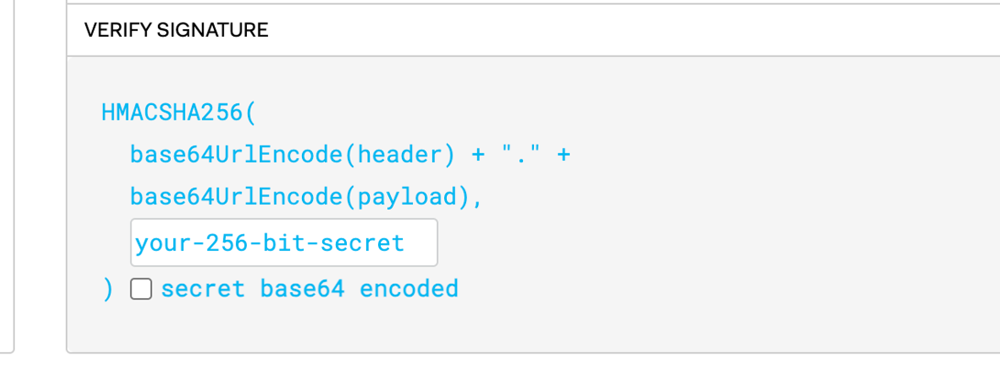

Firmas Digitales
¿Qué es una Firma Digital?
Una firma digital es un mecanismo criptográfico que proporciona autenticidad, integridad y no repudio.
Basada en criptografía de clave pública.
Utilizada para verificar la identidad y asegurar que el contenido no ha sido alterado.
¿Cómo Funciona?
Generación: Se aplica una función hash al mensaje y se cifra con la clave privada.
Verificación: El receptor descifra la firma con la clave pública y compara el hash con el del mensaje.
Propiedades
- Autenticidad: Solo el propietario de la clave privada puede generar la firma.
- Integridad: Cualquier cambio en el mensaje invalida la firma.
- No repudio: El remitente no puede negar haber firmado el mensaje.
-
Imposibilidad de Falsificación:
Es computacionalmente inviable para un tercero falsificar una firma digital válida sin conocer la clave privada del remitente. -
Verificabilidad:
Los destinatarios del mensaje pueden verificar la autenticidad e integridad de la firma digital sin necesidad de compartir ninguna clave secreta.
-
Independencia del Contenido :
La firma digital se calcula sobre el contenido completo del mensaje, pero no revela ninguna información sobre el contenido en sí.
Algoritmos de Firma Digital
Los algoritmos de firma digital más comunes son:
- RSA-PSS (Probabilistic Signature Scheme)
- ECDSA (Elliptic Curve Digital Signature Algorithm)
- EdDSA (Ed25519 y Ed448)
Implementación
Ejemplo en Python:
Firmas con RSA-PSS
from Crypto.PublicKey import RSA
from Crypto.Signature import pss
from Crypto.Hash import SHA256
# Generación de clave RSA
key = RSA.generate(2048)
private_key = key.export_key()
public_key = key.publickey().export_key()
# Mensaje y firma
mensaje = b"Hola, este es un mensaje firmado."
hash_mensaje = SHA256.new(mensaje)
firma = pss.new(key).sign(hash_mensaje)
Verificación de Firma
# Verificación de firma
hash_mensaje = SHA256.new(mensaje)
verifier = pss.new(key.publickey())
try:
verifier.verify(hash_mensaje, firma)
print("Firma válida.")
except (ValueError, TypeError):
print("Firma inválida.")
HASH + Firma
Las funciones hash ayudan a validar la firma de un documento.
Cuando un destinatario valida un documento firmado electrónicamente, ocurre un proceso que comprende dos acciones:

- Generar un nuevo hash a partir del documento recibido
- Descifrar el hash que el propio documento contiene almacenado.
JWT y Firmas Digitales
JWT (JSON Web Token) es un estándar abierto (RFC 7519) que define un formato compacto y autocontenido para la transmisión segura de información entre partes como un objeto JSON.
- JSON Web Tokens (JWT) usa firmas digitales para garantizar autenticidad e integridad.
- La firma se genera con HMAC o algoritmos de clave pública (RSA, ECDSA).
Partes
Consiste en 2 partes tipo de token y algoritmo de cifrado como HMAC o SHA-256
Es la sección que contiene datos llamados claims.
Los claims son propiedades sobre una entidad (normalmente, el usuario) y datos adicionales.

- La firma es el contenido del encabezado codificado, el payload codificado, y/o una llave secreta.
- El algoritmo especificado en el encabezado se utiliza y se firma.
- La firma se utiliza para verificar que el mensaje no se modificó.